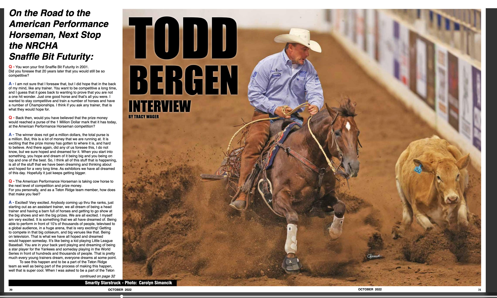
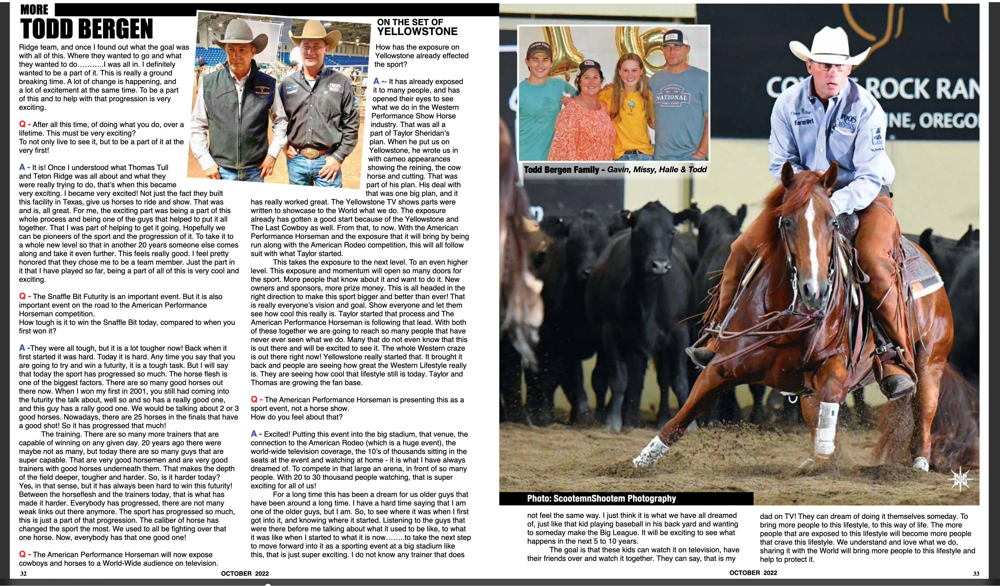

Tap image to zoom · Use arrows or dots to navigate · Swipe on mobile
I am not sure that I foresaw that, but I did hope that in the back of my mind, like any trainer. You want to be competitive a long time, and I guess that it goes back to wanting to prove that you are not a one hit wonder. Just one good horse and that's all you were. I wanted to stay competitive and train a number of horses and have a number of Championships. I think if you ask any trainer, that is what they would hope for.
The winner does not get a million dollars, the total purse is a million. But, this is a lot of money that we are running at. It is exciting that the prize money has gotten to where it is, and hard to believe. And there again, did any of us foresee this, I do not know, but we sure hoped and dreamed for it. When you start into something, you hope and dream of it being big and you being on top and one of the best. So, I think all of this stuff that is happening, is all of the stuff that we have been dreaming and thinking about and hoped for a very long time. As exhibitors we have all dreamed of this day. Hopefully it just keeps getting bigger.
Excited! Very excited. Anybody coming up thru the ranks, just starting out as an assistant trainer, we all dream of being a head trainer and having a barn full of horses and getting to go show at the big shows and win the big prizes. We are all excited. I myself am very excited. It is something that we all have dreamed of. Being able to perform in front of 10's of thousands of people, televised to a global audience, in a huge arena, that is very exciting! Getting to compete in that big coliseum, and big venues like that. Being on television. It's what we have all hoped and dreamed would happen someday. It's like being a kid playing Little League Baseball. You are in your back yard playing and dreaming of being a star player for the Yankees and someday playing in the World Series in front of hundreds and thousands of people. That is pretty much every young trainers dream, everyone dreams at some point.
To see this happen and to be a part of the Teton Ridge team as well as being part of the process of making this happen, well that is super cool. When I was asked to be a part of the Teton Ridge team, and once I found out what the goal was with all of this. Where they wanted to go and what they were really trying to do, that's when this became very exciting. I became very excited! Not just the fact they built this facility in Texas, give us horses to ride and show. That was and is, all great. For me, the exciting part was being a part of this whole process and being one of the guys that helped to put it all together. That I was part of helping to get it going. Hopefully we can be pioneers of the sport and the progression of it. To take it to a whole new level so that in another 20 years someone else comes along and take it even further. This feels really good. I feel pretty honored that they chose me to be a team member. Just the part in it that I have played so far, being a part of all of this is very cool and exciting.
It is! Once I understood what Thomas Tull and Teton Ridge was all about and what they were really trying to do, that's when this became very exciting. I became very excited! Not just the fact they built this facility in Texas, give us horses to ride and show. That was and is, all great. For me, the exciting part was being a part of this whole process and being one of the guys that helped to put it all together.
They were all tough, but it is a lot tougher now! Back when it first started it was hard. Today it is hard. Any time you say that you are going to try and win a futurity, it is a tough task. But I will say that today the sport has progressed so much. The horse flesh is one of the biggest factors. There are so many good horses out there now. When I won my first in 2001, you still had coming into the futurity the talk about, well so and so has a really good one, and this guy has a rally good one. We would be talking about 2 or 3 good horses. Nowadays, there are 25 horses in the finals that have a good shot! So it has progressed that much!
The training. There are so many more trainers that are capable of winning on any given day. 20 years ago there were maybe not as many, but today there are so many guys that are super capable. That are very good horsemen and are very good trainers with good horses underneath them. That makes the depth of the field deeper, tougher and harder. So, is it harder today? Yes, in that sense, but it has always been hard to win this futurity! Between the horseflesh and the trainers today, that is what has made it harder. Everybody has progressed, there are not many weak links out there anymore. The sport has progressed so much, this is just a part of that progression. The caliber of horse has changed the sport the most. We used to all be fighting over that one horse. Now, everybody has that one good one!
It has already exposed it to many people, and has opened their eyes to see what we do in the Western Performance Show Horse industry. That was all a part of Taylor Sheridan's plan. When he put us on Yellowstone, he wrote us in with cameo appearances showing the reining, the cow horse and cutting. That was part of his plan. He's deal with that was one big plan, and it has really worked great. The Yellowstone TV shows parts were written to showcase to the World what we do. The exposure already has gotten a good start because of the Yellowstone and The Last Cowboy as well. From that, to now. With the American Performance Horseman and the exposure that it will bring by being run along with the American Rodeo competition, this will all follow suit with what Taylor started.
This takes the exposure to the next level. To an even higher level. This exposure and momentum will open so many doors for the sport. More people that know about it and want to do it. New owners and sponsors, more prize money. This is all headed in the right direction to make this sport bigger and better than ever! That is really everyone's vision and goal. Show everyone and let them see how cool this really is. Taylor started that process and The American Performance Horseman is following that lead. With both of these together we are going to reach so many people that have never ever seen what we do. Many that do not even know that this is out there and will be excited to see it. The whole Western craze is out there right now! Yellowstone really started that. It brought it back and people are seeing how great the Western Lifestyle really is. They are seeing how cool that lifestyle still is today. Taylor and Thomas are growing the fan base.
Excited! Putting this event into the big stadium, that venue, the connection to the American Rodeo (which is a huge event), the world-wide television coverage, the 10's of thousands sitting in the seats at the event and watching at home — it is what I have always dreamed of. To compete in that large an arena, in front of so many people. With 20 to 30 thousand people watching, that is super exciting for all of us!
For a long time this has been a dream for us older guys that have been around a long time. I have a hard time saying that I am one of the older guys, but I am. So, to see where it was when I first got into it, and knowing where it started. Listening to the guys that were there before me talking about what it used to be like, to what it was like when I started to what it is now — to take the next step to move forward into it as a sporting event at a big stadium like this, that is just super exciting. I do not know any trainer that does not feel the same way. I just think it is what we have all dreamed of, just like that kid playing baseball in his back yard and wanting to someday make the Big League. It will be exciting to see what happens in the next 5 to 10 years.
The goal is that these kids can watch it on television, have their friends over and watch it together. They can say, that is my dad on TV! They can dream of doing it themselves someday. To bring more people to this lifestyle, to this way of life. The more people that are exposed to this lifestyle will become more people that crave this lifestyle. We understand and love what we do, sharing it with the World will bring more people to this lifestyle and help to protect it.